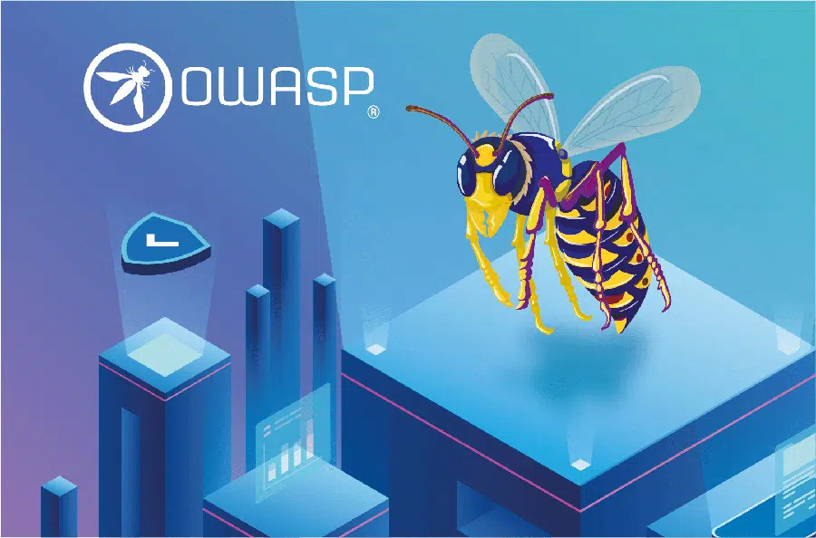

ESQUEMAS VISUALES Y ARQUITECTURA
Diagramas de Seguridad WAF
Explora representaciones visuales de cómo el tráfico malicioso es interceptado y neutralizado en la capa de aplicación.

Posicionamiento Perimetral
Ubicación estratégica del WAF interceptando peticiones antes de llegar al servidor backend.

Mitigación OWASP Top 10
Filtrado activo de inyecciones SQL y ataques de secuencias de comandos en sitios cruzados (XSS).
Bloqueo de Tráfico Malicioso
Respuesta automatizada denegando el acceso (Código 403) ante una firma de ataque detectada.